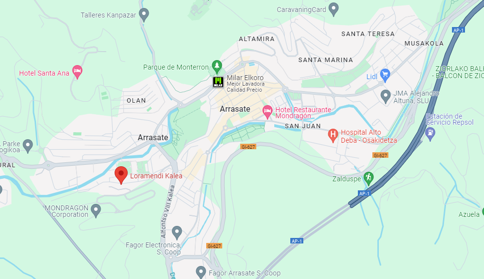

Contacto
- Teléfono: +34648951789
- Email: info@eyehealthdiagnostics.com
Ubicación
Dirección: Loramendi kalea, 4, Mondragón, España
EyeHealth Diagnostics es una empresa innovadora dedicada a desarrollar soluciones avanzadas para el diagnóstico temprano y efectivo del glaucoma. Fundada en 2024, EyeHealth Diagnostics nació con la misión de mejorar la calidad de vida de las personas mediante la detección temprana del glaucoma. Inspirados por la necesidad crítica de diagnósticos precisos y accesibles, hemos crecido para convertirnos en líderes en el campo de la salud ocular.
Nuestra misión es proporcionar tecnología de diagnóstico de glaucoma precisa y accesible, ayudando a los profesionales de la salud a detectar y tratar el glaucoma de manera más eficaz. Nos esforzamos por ser el referente mundial en soluciones de diagnóstico ocular, mejorando la salud visual y previniendo la ceguera causada por el glaucoma.
• INNOVACIÓN: Constantemente desarrollamos y mejoramos nuestras tecnologías para ofrecer las mejores soluciones a nuestros clientes.
• CALIDAD: Nos comprometemos a proporcionar productos y servicios de la más alta calidad.
• ACCESIBILIDAD: Trabajamos para que nuestras soluciones sean accesibles para todos, independientemente de su ubicación geográfica.
• COMPROMISO CON LA SALUD: Nuestra prioridad es la salud y el bienestar de nuestros pacientes.

CEO de la empresa

Director de calidad
Ingeniero de Software
Oftalmóloga
Contable
En EyeHealth Diagnostics, creemos en retribuir a la comunidad. Participamos activamente en iniciativas de salud ocular comunitarias y colaboramos con ONG para llevar tecnología de diagnóstico a áreas desatendidas.
Mirando hacia el futuro, estamos comprometidos a continuar innovando y expandiendo nuestras soluciones para enfrentar los desafíos del diagnóstico de glaucoma. Nuestro objetivo es hacer que la tecnología avanzada de salud ocular sea accesible para todos.